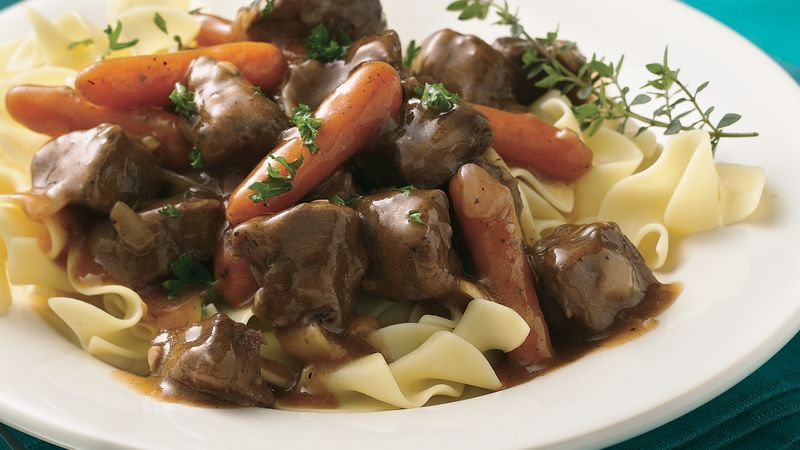

Beef Burgundy

Description
This is a classic dish of the Burgundy region of France, designed to celebrate the wines for which Burgundy is famous. The Herb Bouquet adds a special flavor to this extremely popular dish.
Ingredients
- 1 cup beef broth
- 3 tablespoons all-purpose flour
- 1 tablespoon tomato paste
- 1 teaspoon beef demi glace
- 3 tablespoons bacon drippings
- 2 pounds beef round, cut into 3 inch pieces
- 3 tablespoons sherry wine
- 1 ½ cups chopped onions
- 1 cup Burgundy wine
Herb Bouquet (Bouquet Garni)
- 3 sprigs fresh parsley
- 3 sprigs fresh rosemary
- 1 sprig fresh thyme
- 1 bay leaf
- 12 fresh mushrooms, sliced
- ¼ cup butter
- 1 tablespoon chopped fresh parsley, for garnish
Steps
- In a small bowl, mix together beef broth, flour, tomato paste and demi glace; set aside.
- Heat bacon drippings in a large heavy skillet over medium heat. Add beef, and cook until brown on all sides. Remove beef from skillet; set aside. Stir the sherry wine into the skillet. Add the onions, and cook about 5 minutes. Blend in the tomato paste mixture, and bring to a rapid boil, stirring constantly. Stir in Burgundy wine. Make the herb bouquet: Place parsley, rosemary, thyme, and bay leaf in a square of cheesecloth. Place herb bouquet in sauce.
- Return beef to skillet. Cover, and simmer over low heat for about 3 hours, or until beef is tender.
- Melt butter in a small skillet over medium heat. Saute mushrooms until lightly browned. Add to meat in the skillet, and continue cooking 15 minutes. Discard bouquet garni. Serve in a casserole dish, sprinkled with parsley.
HOME